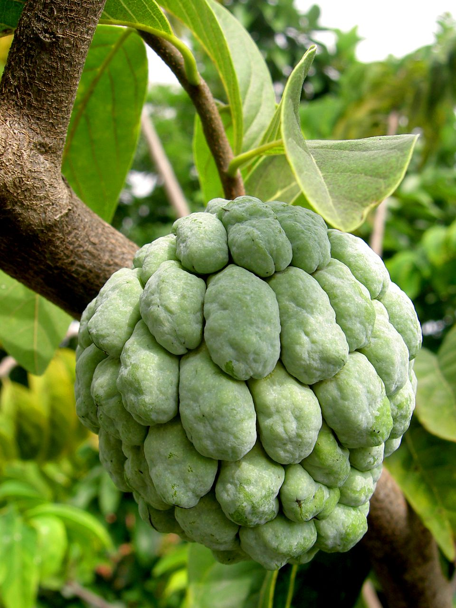

P
Pomme-canelle
Son fruit est appelé atte ou pomme cannelle. Il est gros comme une pomme. Sous ses écailles épaisses et molles se trouve une chair blanche, tendre, sucrée et parfumée qui se mange telle quelle. Elle est criblée de pépins ronds et aplatis d'environ 1 cm de diamètre. Ce fruit est très populaire dans les marchés tropicaux.
Il est cultivé dans la plupart des régions subtropicales : en Amérique latine, en Asie du Sud et du Sud-Est où il a été introduit dès le XVIe siècle, autour de l'océan Indien et de l'océan Pacifique, aux Antilles (principalement en Martinique).
